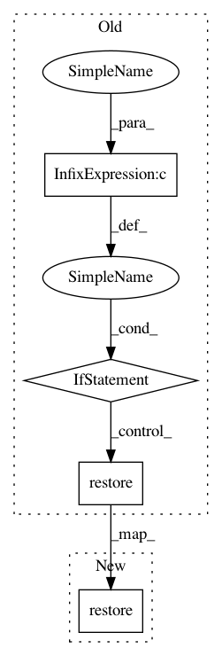

c377363e505d3223df0136f14e415ecd5e2bceaa,rl_coach/graph_managers/graph_manager.py,GraphManager,restore_checkpoint,#GraphManager#,544
Before Change
screen.warning("No checkpoint to restore in: {}".format(self.task_parameters.checkpoint_restore_dir))
else:
screen.log_title("Loading checkpoint: {}".format(checkpoint.model_checkpoint_path))
if not hasattr(self.agent_params.memory, "memory_backend_params") or self.agent_params.memory.memory_backend_params.run_type != str(RunType.ROLLOUT_WORKER):
self.checkpoint_saver.restore(self.sess, checkpoint.model_checkpoint_path)
[manager.restore_checkpoint(self.task_parameters.checkpoint_restore_dir) for manager in self.level_managers]
def _get_checkpoint_state_tf(self):
import tensorflow as tf
After Change
screen.warning("No checkpoint to restore in: {}".format(self.task_parameters.checkpoint_restore_dir))
else:
screen.log_title("Loading checkpoint: {}".format(checkpoint.model_checkpoint_path))
self.checkpoint_saver.restore(self.sess, checkpoint.model_checkpoint_path)
[manager.restore_checkpoint(self.task_parameters.checkpoint_restore_dir) for manager in self.level_managers]
def _get_checkpoint_state_tf(self):
In pattern: SUPERPATTERN
Frequency: 3
Non-data size: 4
Instances
Project Name: NervanaSystems/coach
Commit Name: c377363e505d3223df0136f14e415ecd5e2bceaa
Time: 2019-01-02
Author: gouravr@amazon.com
File Name: rl_coach/graph_managers/graph_manager.py
Class Name: GraphManager
Method Name: restore_checkpoint
Project Name: NervanaSystems/coach
Commit Name: c694766faddd72b2b3966430f9f56ace27693606
Time: 2018-12-25
Author: gouravr@amazon.com
File Name: rl_coach/graph_managers/graph_manager.py
Class Name: GraphManager
Method Name: restore_checkpoint
Project Name: deepmipt/DeepPavlov
Commit Name: 2e530e78c78c3f9f899143c437f55618d3038951
Time: 2018-02-18
Author: arkhipov@yahoo.com
File Name: deeppavlov/core/models/tf_model.py
Class Name: TFModel
Method Name: load